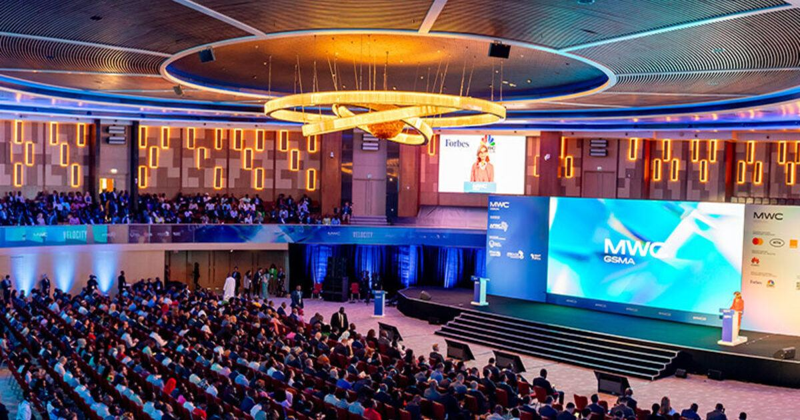

Conferences · Tech
MWC Kigali 2027
- Dates
- Dates TBA
- Venue
- Kigali Convention Centre (usual venue; next dates TBC)
- Location
- Kigali, Rwanda
- Format
- In-person
- Category
- Tech
- Industry
- Mobile and connectivity conference and exhibition
- Organiser
- GSMA
- Official website
- https://www.mwckigali.com/
About
GSMA postponed MWC26 Kigali (planned 16–18 June 2026) on 2 June 2026; official mwckigali.com and the postponement statement (fetched 24 Nov 2026) say a new date will be announced in due course. Those June 2026 dates are past and are not used. The event remains the official GSMA Africa connectivity gathering, usually at the Kigali Convention Centre. Record is dates TBA. Rwanda dates are local (Central Africa Time, CAT, Africa/Kigali, UTC+2, no daylight saving).
Topics: mobile, connectivity, artificial intelligence, digital infrastructure, fintech.
No organiser attendance figure found on the official pages checked (24 Nov 2026). Ranked by an estimated size tier 'medium' (our judgement from format, venue and scale, not an official number).